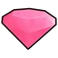

Codes
0Active now
0Codes ever
0uC given out
0Years of codes
Code checker
Type any code to see if it still works and what it gives.
Working right now
Active codes
Click a code to copy it. These were last checked on the wiki on .
Before you redeem
How codes work
Since 2016
Codes through the years
How many new codes the wiki listed each year. Click a year to jump to its codes in the archive.
Hall of expired codes
Code archive
Every code that has been on the wiki and no longer works, newest first. They're here for history; redeeming them won't give anything.

No codes match
Try another search or clear the filters.
Special circumstances
Limited-access codes
These only worked for players who owned something specific. None of them are listed on the wiki any more.